37 / 100 — 공포
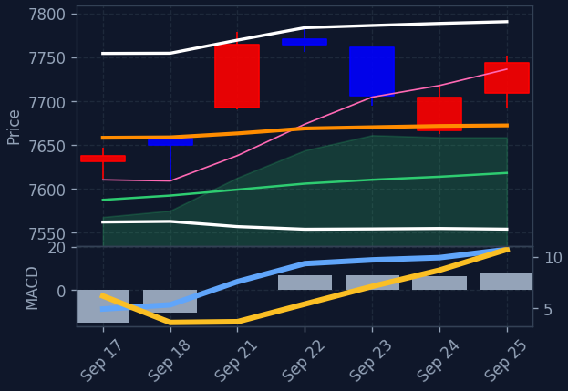
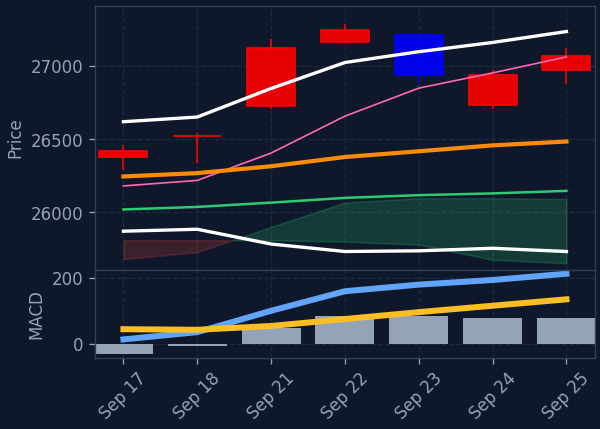
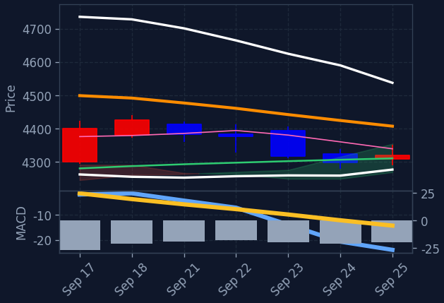
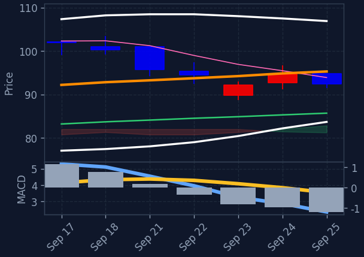
미국 증시는 전반적으로 상승 마감하며 주간 단위 상승세를 이어갔습니다. 특히 기술주와 반도체 섹터가 강세를 보였으며, 이는 성장주가 채권 금리 상승 부담을 일부 상쇄했기 때문입니다. 유가(WTI)는 이란의 호르무즈 해협 재개 가능성 언급에 하락세를 보였습니다.
미국 증시는 채권 금리 상승에도 불구하고 기술주와 반도체 섹터의 강세에 힘입어 상승했습니다. 특히 마이크로소프트와 같은 빅테크 기업의 견조한 흐름이 지수 상승을 견인했습니다. 한편, 테슬라와 메타 등 일부 대형 기술주는 하락세를 보이며 혼조세를 나타냈습니다. 유가 하락은 시장의 인플레이션 우려를 일부 완화시키는 요인으로 작용했습니다.
오늘 미국 증시에서는 반도체 섹터가 필라델피아 반도체 지수 상승과 SOXL의 강세로 두드러진 성과를 보였습니다. 기술/IT 섹터 역시 전반적인 상승 흐름을 주도했으며, 이는 마이크로소프트, 애플 등 주요 기술주의 견조한 움직임과 맥을 같이 합니다. 반면, 에너지 섹터는 유가 하락에 영향을 받아 약세를 나타냈습니다. 이러한 미국 반도체 및 기술주의 강세 흐름은 한국 증시에서도 관련 종목들에 대한 주목도를 높일 수 있습니다.
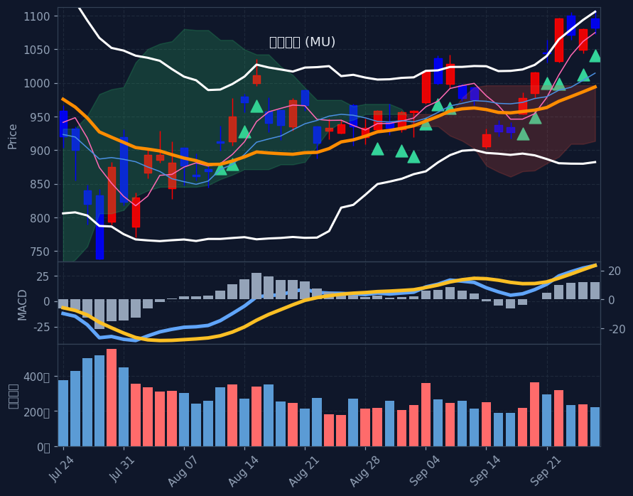
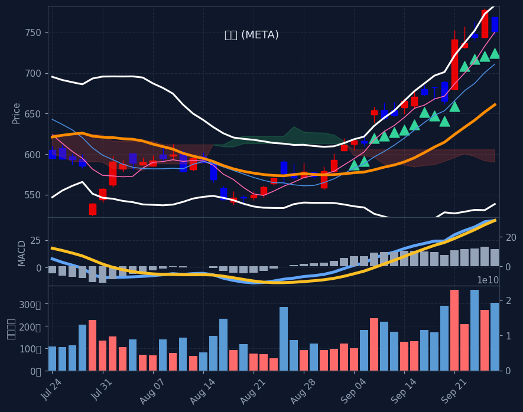
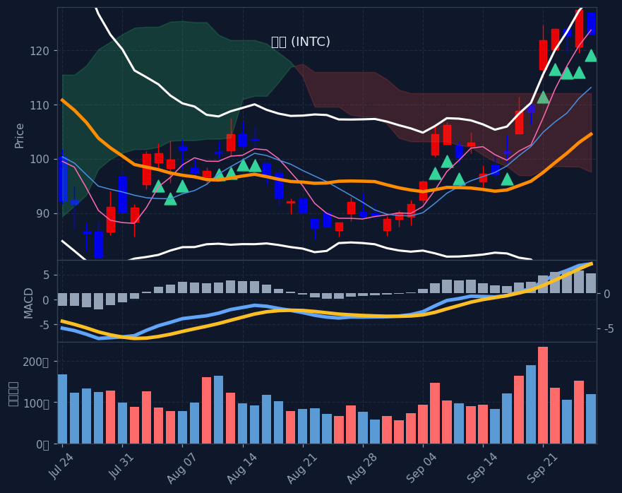
※ S&P500 대상 A/B/C/D 전략별 분류(각 칸 거래대금순). 한 종목이 여러 전략에 잡히면 각 칸에 중복 표기. 백테스트상 기계적 엣지는 약하며 매수 추천이 아닙니다. 판단·책임은 본인.
📅 결제일 9/21~9/25(5거래일) 기준 · 오늘 9/26 기준 약 1일 전 데이터 · T+2 결제 기준(실제 매매는 약 2거래일 전)
💸 한국인 순매수 일평균: +3,332억 (전주 +3,732억 대비 -10.7%) · 5일 총액 +16,662억
※ 예탁결제원(SEIBro) 최근 5거래일 한국인 순매수/순매도 결제금액(T+2) · 9/21~9/25 결제 기준(실제 매매는 약 2거래일 전). 자금이 어디로 유입·유출되는지 참고용.
현재 E(투매 바닥) 신호 없음 — 시장이 바닥권(지수 RSI·공포탐욕 극단)이 아닐 땐 비어있는 게 정상입니다.
※ 투매 바닥(RSI≤30+50선이격+거래량폭증)에서 반등 시작 포착, 4시간봉 RSI도 과매도. 🔥는 지수(나스닥/S&P·코스피)도 RSI<35 동반 바닥(강신호). 떨어지는 칼날 위험 — 매수 추천 아님, 판단·책임 본인.
※ 60일선까지 눌렸다 지지받고 마감한 종목(참고 태그). 백테스트상 다음날 반등 엣지 없음(승률 48~49%·생존편향 포함) 확인됨 — 매수 추천·시그널 아님, 종합점수/Top3에도 미반영. 단순 참고용.
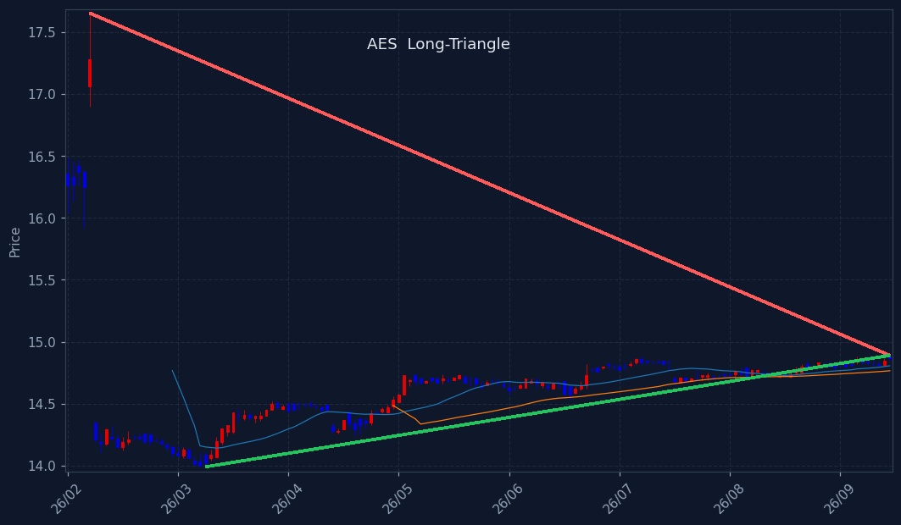
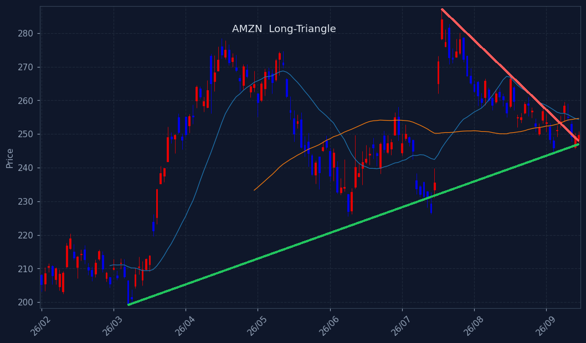
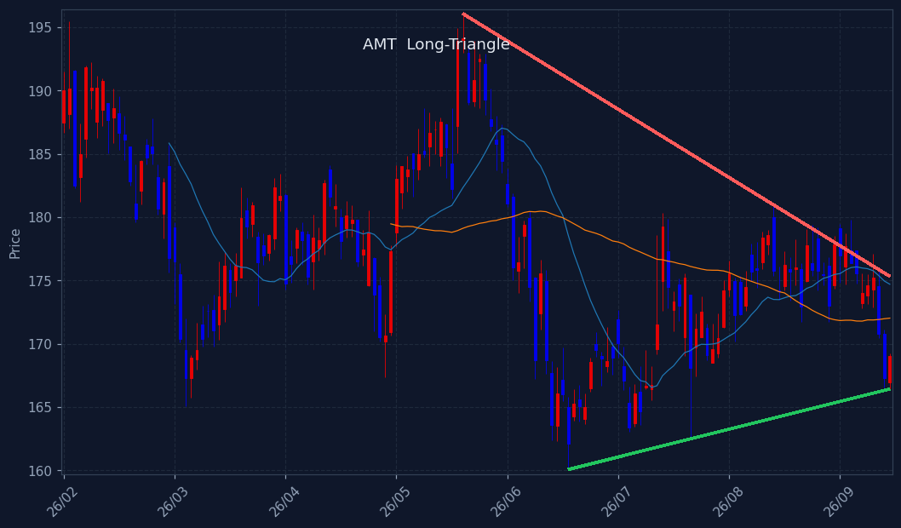
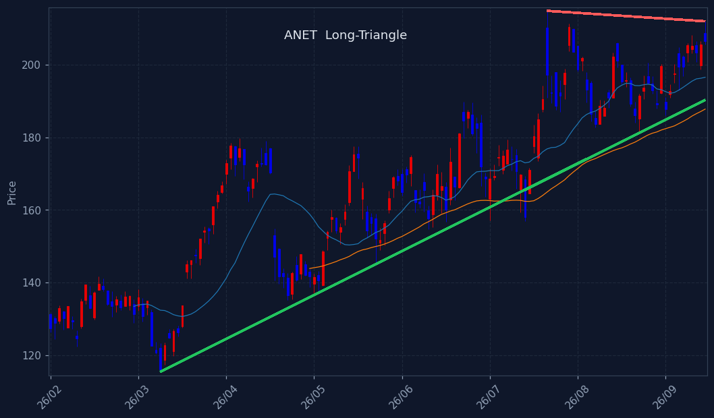
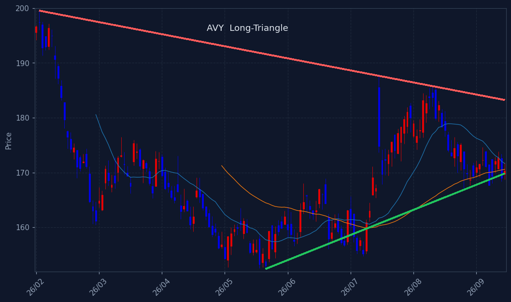
※ 삼각수렴 돌파 임박 종목. 📐장기 삼각수렴(수개월 대형 삼각형, 볼록껍질 추세선+실수축) = 백테스트 491건 승률 66%·평균 +8.7%/20일로 엣지 확인(HOOD·TSLA류 대박 초입). 단기 코일 = 엣지 약함(승률 ~60% 베타 수준). 🔻대칭=고점↓·저점↑ / 🟰바닥지지=저점 평평. 매수추천 아님·종합점수/Top3 미반영(관찰용).